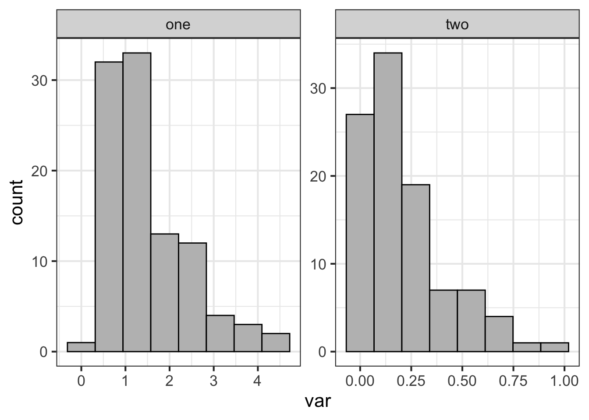

Chapter 5 Generalized Models
library(tidyverse)
library(emmeans)
library(car)
library(agridat)5.1 Example: Conducting a one-way ANOVA with non-normal data
Let’s load up the InsectSprays data
data("InsectSprays")# available from base R Now we need to filter the data to just 4 treatments:
d <- InsectSprays %>% filter(spray=='A'|spray=='B'|spray=='C'|spray=='F') %>%
droplevels()Let’s plot out data:
ggplot(d, aes(x=spray,y=count)) +
geom_boxplot(outlier.shape = NA) +
geom_jitter(height=0,width=.1) +
theme_classic() +
theme(axis.title = element_text(face= 'bold', size = 15))
hist(d$count)
Now let’s construct a linear model to examine the effect of the different sprays on insect counts:
lm1 <- lm(count~spray, data=d)
Anova(lm1, type=2) ## car::Anova will print out an ANOVA table## Anova Table (Type II tests)
##
## Response: count
## Sum Sq Df F value Pr(>F)
## spray 1648.73 3 26.478 6.091e-10 ***
## Residuals 913.25 44
## ---
## Signif. codes: 0 '***' 0.001 '**' 0.01 '*' 0.05 '.' 0.1 ' ' 1Let’s check the residuals of the model:
hist(resid(lm1)) #' residuals should be normally distributed, even for glmplot(resid(lm1)~fitted(lm1)) ## residuals should be evenly dispersed around 0 across the range of x's
abline(h=0) # funnel shapes or curvature is badqqPlot(resid(lm1)) ## residuals should line up pretty closely to the blue line## [1] 45 46boxplot(resid(lm1) ~ d$spray) ## variances should be homogeneous for each groupLet’s use emmeans:
emmeans(lm1, ~spray)## spray emmean SE df lower.CL upper.CL
## A 14.50 1.32 44 11.849 17.15
## B 15.33 1.32 44 12.683 17.98
## C 2.08 1.32 44 -0.567 4.73
## F 16.67 1.32 44 14.016 19.32
##
## Confidence level used: 0.95Note all the SE are the same and CL is off.
5.2 Log-linear model
Now let’s use a log-linear model to examine the effect of the different sprays on insect counts.
lm2 <- lm(log(count+1)~spray, data=d)
Anova(lm2, type=2) ## car::Anova will print out an ANOVA table testing## Anova Table (Type II tests)
##
## Response: log(count + 1)
## Sum Sq Df F value Pr(>F)
## spray 29.3651 3 56.682 3.701e-15 ***
## Residuals 7.5984 44
## ---
## Signif. codes: 0 '***' 0.001 '**' 0.01 '*' 0.05 '.' 0.1 ' ' 1Let’s check residuals:
hist(resid(lm2)) ## residuals should be normally distributed, even for glm
plot(resid(lm2)~fitted(lm2)) + ## residuals should be evenly dispersed around 0 across the range of x's
abline(h=0) # funnel shapes or curvature is bad## integer(0)qqPlot and boxplot next:
qqPlot(resid(lm2)) ## residuals should line up pretty closely to the blue line## [1] 27 25boxplot(resid(lm2) ~ d$spray) ## variances should be homogeneous for each groupLet’s use emmeans again:
emmeans(lm2, ~spray) ## note that now all means are back-transformed## spray emmean SE df lower.CL upper.CL
## A 2.697 0.12 44 2.455 2.94
## B 2.757 0.12 44 2.515 3.00
## C 0.953 0.12 44 0.711 1.19
## F 2.816 0.12 44 2.574 3.06
##
## Results are given on the log(mu + 1) (not the response) scale.
## Confidence level used: 0.95To calculate back-transformed emmeans we can add additional arguments:
emmeans(lm2, ~spray, type='response') ## note that now all means are back-transformed## spray response SE df lower.CL upper.CL
## A 13.83 1.779 44 10.65 17.9
## B 14.75 1.889 44 11.36 19.1
## C 1.59 0.311 44 1.04 2.3
## F 15.70 2.004 44 12.12 20.3
##
## Confidence level used: 0.95
## Intervals are back-transformed from the log(mu + 1) scale5.3 Generalized linear models
Now let’s use GLMs to examine the effect of the different sprays:
glm1 <- glm(count~spray, data=d, family='poisson') glm() is a general function that conducts a generalized linear model and we must specify the ‘family’ (aka error distribution). The default is the ‘gaussian’ distribution (normal). All the model “calculations” are saved in an object we called ‘glm1’.
Anova(glm1, type=2) ## car::Anova will print out an ANOVA table testing ## Analysis of Deviance Table (Type II tests)
##
## Response: count
## LR Chisq Df Pr(>Chisq)
## spray 185.83 3 < 2.2e-16 ***
## ---
## Signif. codes: 0 '***' 0.001 '**' 0.01 '*' 0.05 '.' 0.1 ' ' 1For the ANOVA above, the null hypothesis that all group means are equal. The argument, type = 2, provides margin tests, which is usually better than the default Type I, especially for more complicated models. For GLMs, Anova returns a likelihood ratio test with a chi-sq value
summary(glm1) ## summary() will provide the model coefficients (ie. the "guts" of the model)##
## Call:
## glm(formula = count ~ spray, family = "poisson", data = d)
##
## Deviance Residuals:
## Min 1Q Median 3Q Max
## -2.3852 -0.9345 -0.1482 0.7048 2.6709
##
## Coefficients:
## Estimate Std. Error z value Pr(>|z|)
## (Intercept) 2.67415 0.07581 35.274 <2e-16 ***
## sprayB 0.05588 0.10574 0.528 0.597
## sprayC -1.94018 0.21389 -9.071 <2e-16 ***
## sprayF 0.13926 0.10367 1.343 0.179
## ---
## Signif. codes: 0 '***' 0.001 '**' 0.01 '*' 0.05 '.' 0.1 ' ' 1
##
## (Dispersion parameter for poisson family taken to be 1)
##
## Null deviance: 262.154 on 47 degrees of freedom
## Residual deviance: 76.323 on 44 degrees of freedom
## AIC: 273.93
##
## Number of Fisher Scoring iterations: 5The coefficients allow you rebuild the means from the linear model. Rebuilding the model from the coefficients is not super helpful and the p-values aren’t very meaningful. Residual deviance should be about equal to the degrees of freedom. More than twice as high is problematic.
Now let’s check assumptions of model by examining residuals:
hist(resid(glm1)) ## residuals should be normally distributed, but don't need to be for GLMs
plot(resid(glm1)~fitted(glm1)) ## residuals should be evenly dispersed around 0 across the range of x's
abline(h=0) # funnel shapes or curvature is badqqPlot(resid(glm1)) ## calls from car package, residuals should line up pretty closely to the blue line
## [1] 27 23# points that drift from line might be outliers
boxplot(resid(glm1) ~ d$spray) ## variances should be homogeneous for each groupDiagnosing more complex GLMs can be very difficult. Residuals are often NOT NORMALLY DISTRIBUTED. We will return to this later…
emmeans(glm1, ~spray) ## emmeans::emmmeans will rebuild the model for you## spray emmean SE df asymp.LCL asymp.UCL
## A 2.674 0.0758 Inf 2.526 2.82
## B 2.730 0.0737 Inf 2.586 2.87
## C 0.734 0.2000 Inf 0.342 1.13
## F 2.813 0.0707 Inf 2.675 2.95
##
## Results are given on the log (not the response) scale.
## Confidence level used: 0.95The emmeans code above will print off the means, SE, and confidence intervals for each treatment group. Note, the coefficients are on the log-scale (look at model).
emmeans(glm1, pairwise~spray, type='response') ## adding 'pairwise' will conduct pairwise contrasts -- ie. compare each group mean to the others## $emmeans
## spray rate SE df asymp.LCL asymp.UCL
## A 14.50 1.099 Inf 12.50 16.82
## B 15.33 1.130 Inf 13.27 17.72
## C 2.08 0.417 Inf 1.41 3.08
## F 16.67 1.179 Inf 14.51 19.14
##
## Confidence level used: 0.95
## Intervals are back-transformed from the log scale
##
## $contrasts
## contrast ratio SE df null z.ratio p.value
## A / B 0.946 0.1000 Inf 1 -0.528 0.9522
## A / C 6.960 1.4886 Inf 1 9.071 <.0001
## A / F 0.870 0.0902 Inf 1 -1.343 0.5352
## B / C 7.360 1.5688 Inf 1 9.364 <.0001
## B / F 0.920 0.0940 Inf 1 -0.816 0.8468
## C / F 0.125 0.0265 Inf 1 -9.803 <.0001
##
## P value adjustment: tukey method for comparing a family of 4 estimates
## Tests are performed on the log scaleAdding the argument ‘pairwise’ will conduct pairwise contrasts – ie. compare each group mean to the others. This automatically adjusts p-values using the ‘tukey’ adjust. This can be changed using ‘adjust=XX’ within the emmeans function. The type=‘response’ will back-transform (ie. exponentiate) to the original scale
Let’s compare residuals for normal, log-transformed, and poisson models:
par(mfrow=c(1,3))
boxplot(resid(lm1) ~ d$spray)
boxplot(resid(lm2) ~ d$spray)
boxplot(resid(glm1) ~ d$spray) 
dev.off()## null device
## 1Let’s also compare means for normal, log-transformed, and poisson models:
emmeans(lm1, ~spray)## spray emmean SE df lower.CL upper.CL
## A 14.50 1.32 44 11.849 17.15
## B 15.33 1.32 44 12.683 17.98
## C 2.08 1.32 44 -0.567 4.73
## F 16.67 1.32 44 14.016 19.32
##
## Confidence level used: 0.95emmeans(lm2, ~spray, type='response')## spray response SE df lower.CL upper.CL
## A 13.83 1.779 44 10.65 17.9
## B 14.75 1.889 44 11.36 19.1
## C 1.59 0.311 44 1.04 2.3
## F 15.70 2.004 44 12.12 20.3
##
## Confidence level used: 0.95
## Intervals are back-transformed from the log(mu + 1) scaleemmeans(glm1, ~spray, type='response')## spray rate SE df asymp.LCL asymp.UCL
## A 14.50 1.099 Inf 12.50 16.82
## B 15.33 1.130 Inf 13.27 17.72
## C 2.08 0.417 Inf 1.41 3.08
## F 16.67 1.179 Inf 14.51 19.14
##
## Confidence level used: 0.95
## Intervals are back-transformed from the log scale